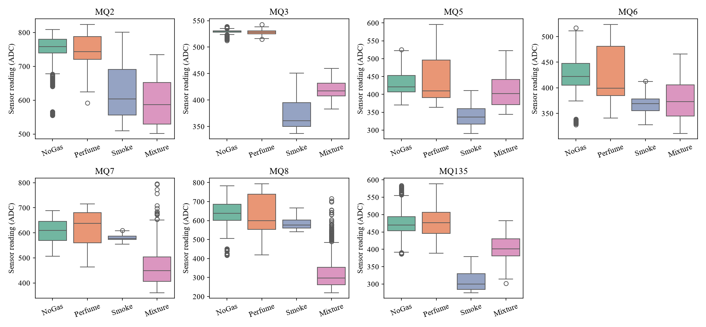
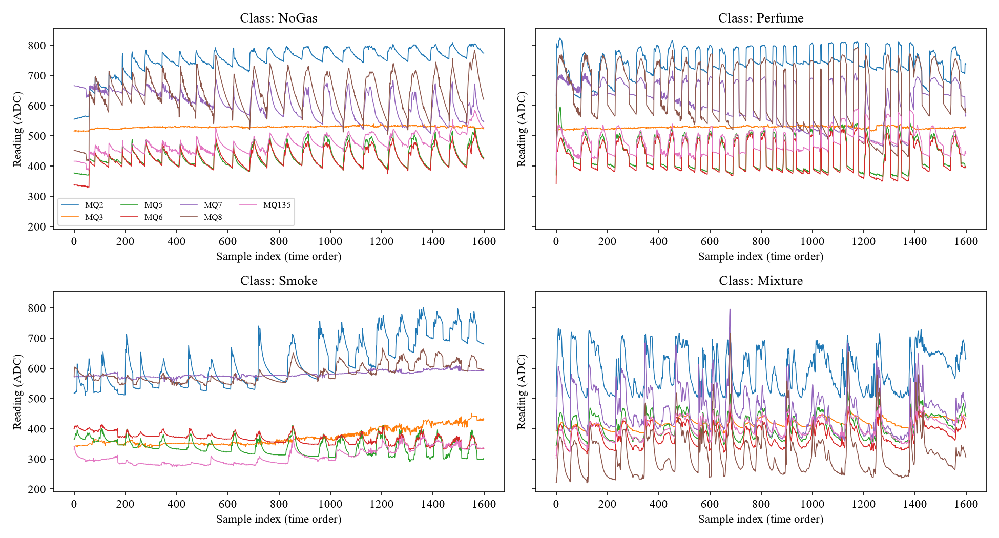
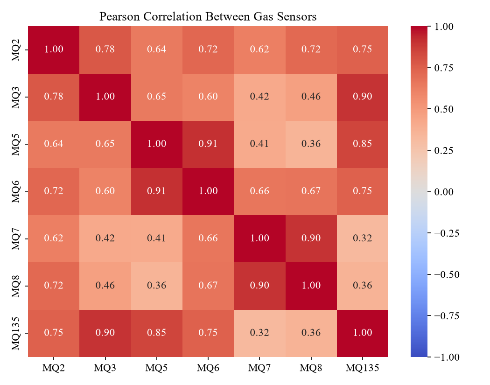
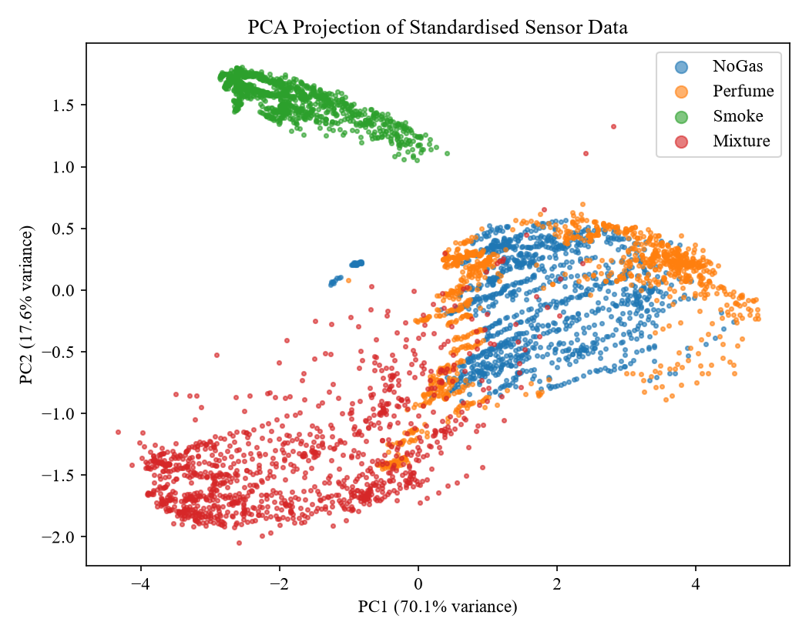

04 · The problem & the data
The dataset and what it shows
Section 3.2–3.4 of the report: where the numbers come from, what they look like, and the three things the pictures tell you before any model is trained.
In plain words
Researchers in Pune, India put seven MQ sensors side by side and recorded them every 2 seconds. They did this four times: in clean air, with deodorant spray, with incense smoke, and with both. That gives four classes of 1,600 readings each, 6,400 in total. Each reading is just seven whole numbers.
Before training anything, you looked at the data. Three facts stood out. Smoke and Mixture look very different from the rest, so they should be easy. NoGas and Perfume look almost the same, so they will be hard. And the readings change slowly over time, so neighbouring readings are near-copies of each other. All three facts come back in the results.
Where the data comes from
- Name
- MultimodalGasData (Narkhede et al., 2022), Mendeley Data, DOI 10.17632/zkwgkjkjn9.2
- Licence
- CC BY 4.0 — free to use with credit
- Recorded at
- Symbiosis Institute of Technology, Pune, India
- Sensors
- MQ2, MQ3, MQ5, MQ6, MQ7, MQ8, MQ135 (+ a thermal camera, not used here)
- Values
- 10-bit ADC counts (integers, observed range 220–824), not ppm
- Sampling
- one reading every 2 seconds
- Gas sources
- Perfume = deodorant (≈95% alcohol); Smoke = incense sticks; Mixture = both; NoGas = clean air
- Size
- 6,400 rows × 10 columns, no missing values, 228 exact repeated readings
| Serial | MQ2 | MQ3 | MQ5 | MQ6 | MQ7 | MQ8 | MQ135 | Gas |
|---|---|---|---|---|---|---|---|---|
| 0 | 555 | 515 | 377 | 338 | 666 | 451 | 416 | NoGas |
| 0 | 592 | 517 | 370 | 341 | 632 | 419 | 389 | Perfume |
| 0 | 518 | 341 | 365 | 400 | 572 | 572 | 332 | Smoke |
| 0 | 506 | 392 | 344 | 311 | 395 | 222 | 302 | Mixture |
The first reading of each class. The serial number restarts at 0 for every class.
Class means — the first clue
| Class | MQ2 | MQ3 | MQ5 | MQ6 | MQ7 | MQ8 | MQ135 |
|---|---|---|---|---|---|---|---|
| NoGas | 748.4 | 528.9 | 430.7 | 425.4 | 606.3 | 637.1 | 474.5 |
| Perfume | 745.3 | 527.7 | 439.9 | 429.0 | 617.2 | 633.8 | 480.9 |
| Smoke | 623.2 | 372.4 | 340.2 | 368.2 | 580.2 | 583.7 | 308.1 |
| Mixture | 593.4 | 419.1 | 407.5 | 376.5 | 460.1 | 315.2 | 403.4 |
NoGas and Perfume differ by only a few counts on every sensor. Smoke drops MQ3 and MQ135 sharply. Mixture has by far the lowest MQ8 (315 versus about 600).

Readings over time — the second clue

Why this picture matters later
Readings 2 seconds apart are almost identical. A random split therefore puts near-twins in both the training and test sets, which makes the test easier. That is why Chapter 4 also runs a time-ordered test. See page 12.
Scales and correlation
The sensors use very different ranges. The standard deviation of MQ8 is 151.0 but of MQ6 only 45.1. A distance-based method would let MQ8 dominate, so every feature is standardised before the RBF-SVM (see page 07).

PCA — the third clue
PCA finds the directions along which the data spreads most. They are the eigenvectors of the covariance matrix \(\mathbf{S}\) of the standardised data:

PCA is used only for pictures. The SVM always uses all seven standardised features.
Class balance and the split
Every class has exactly 1,600 readings, so accuracy is a fair summary and no re-balancing is needed. The data were split with a fixed random seed (42), keeping the 1:1:1:1 ratio in every part:
Say this if asked to describe the data
"It is the public MultimodalGasData set: 6,400 readings from seven MQ sensors, recorded every two seconds, in four balanced classes — clean air, deodorant, incense smoke and both. I used only the sensor values, which are raw 10-bit ADC counts. Exploration showed smoke and mixture are easy to separate but clean air and perfume overlap heavily, which is exactly where the final model's few errors are."
A second dataset: real pipe leaks
The pipeline case study uses another public dataset, GPLA-12: 684 five-second sound recordings of leaks on a real gas pipeline test rig, at 0.2, 0.4 and 0.5 MPa, from two microphones, in quiet and noisy surroundings. It is described on page 09.